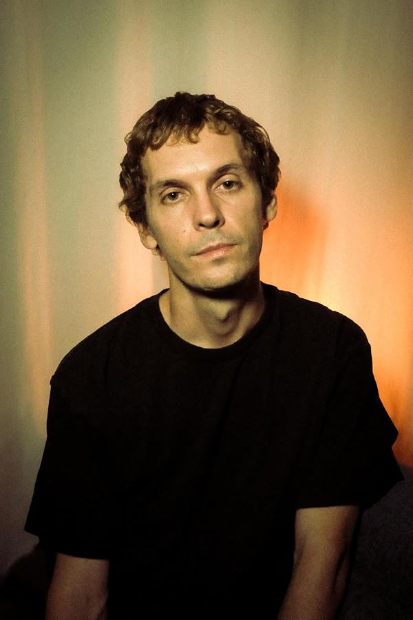

Rowbie Orsatti
Born in 1991, Rowbie is Noon Orsatti’s son and a fourth-generation member of the family’s stunt tradition. His first show was Charmed (1998), followed by The Bernie Mac Show (2001); he joined the Screen Actors Guild in 2001.
His work developed into stunt performance and coordination. On Project X he doubled lead actor Thomas Mann and performed the roof jump. As a child on Cheaper by the Dozen he tested gags off camera for the young actors and appeared in the moon-bounce scene with Steve Martin.
His credits include Hawkeye, Extraction II, Thunderbolts* and Stranger Things (2025). He doubled Joe Locke on Agatha All Along and John Lee Ames on Ballard (2025), and coordinated Charlie Puth’s ‘Loser’ music video (2022). Film-specific memories and gags remain with their individual titles.
Credits in the archive (57)
- 1998 Charmed TV First credit (per IMDb)
- 2001 Grounded for Life TV Stunt double: Griffin Frazen (1 ep, 2001)
- 2001 The Bernie Mac Show TV Stunts (2 eps, 2001)
- 2003 Carnivàle TV Stunts
- 2003 Cheaper by the Dozen Stunts
- 2003 Scrubs TV as Pilgrim Kid · 1 episode
- 2003 The Cat in the Hat Stunts
- 2004 Christmas with the Kranks Stunts
- 2004 Entourage TV Stunts
- 2005 The Closer TV Stunts
- 2006 Standoff TV Stunts
- 2010 Let Me In Actor: Scottie Tate · Stunts
- 2011 Conan the Barbarian Stunts
- 2011 Criminal Minds TV Stunts (1 ep, 2011: "Self-Fulfilling Prophecy")
- 2011 Drive Angry Stunts
- 2011 In Time Stunts
- 2011 The Mechanic Stunts
- 2011 Trespass Stunts
- 2012 Project X Stunt Double: Thomas Mann
- 2012 Stolen Stunts
- 2013 Escape Plan Stunts
- 2013 Family Tools TV Stunts
- 2013 Grown Ups 2 Stunts
- 2014 Ride Along Stunts
- 2015 Murder in the First TV Stunts (1 ep, 2015: "Twenty-Fifteen")
- 2016 Jane the Virgin TV Stunts (1 ep, 2016)
- 2016 Lethal Weapon TV Stunts (1 ep, 2016: Pilot)
- 2016 Major Crimes TV Stunts (1 ep, 2016: "Present Tense")
- 2016 The Accountant Stunts (pre-vis)
- 2018 All Night TV Stunts
- 2018 Light as a Feather TV Stunts · Assistant Stunt Coordinator
- 2019 All Rise TV Stunts
- 2019 Avengers: Endgame Stunts
- 2019 S.W.A.T. TV Stunts (1 ep, 2019)
- 2019 The Orville TV Stunts (2 episodes)
- 2021 Hawkeye TV Stunts (5 eps)
- 2021 Rebel TV Stunts
- 2021 The Falcon and the Winter Soldier TV Stunt Rigger
- 2022 Charlie Puth: Loser Music Video Stunt Coordinator
- 2022 Secret Headquarters Stunt rigger
- 2023 Bad Bodyguard Stunt Coordinator (short)
- 2023 Extraction 2 Stunts
- 2024 Agatha All Along TV Stunt double: Joe Locke (9 eps)
- 2024 Fly Me to the Moon Stunts
- 2024 The Middle Stunt Coordinator (short)
- 2025 Ballard TV Stunt double: John Lee Ames
- 2025 Bride Hard Stunts
- 2025 Stranger Things TV Stunt performer (2 eps)
- 2025 The Runarounds TV Utility Stunts
- 2025 Thunderbolts* Stunts
- 2025 You're Cordially Invited Stunts · Stunt Coordinator (reshoots)
- 2026 Beauty in Black TV Utility Stunts
- 2026 Fort Valor Stunt Performer (short)
- 2026 The Oval TV Stunt Performer
- 2027 John Rambo Stunt Coordinator (upcoming, 2027)
- 2027 Judgment Day Assistant Stunt Coordinator (upcoming, 2027)
- 2027 Twilight of the Dead Stunts (upcoming, 2027)
On the timeline
Charmed: a family show
Charmed was a family show. Ernie F. Orsatti coordinated its stunts from the start, Rowbie Orsatti got his first screen credit on it in 1998, and in season 3 Noon Orsatti took over from his father and ran the stunts – and directed second unit – through the 2006 series finale, about 128 episodes. After Charmed ended, Noon turned his focus back to feature films. Eight seasons of witches, demons and weekly fights made Charmed a training ground: Noon brought in performers who were just starting out, and a generation of stunt people launched their careers on his set.
Rowbie Orsatti joins SAG
Rowbie Orsatti becomes a member of the Screen Actors Guild – the union Ken Orsatti led as national executive director from 1981 to 2000.
Sources: imdb.com · Orsatti family · family